La siguientes camadas seran el producto de las siguientes cruzas:
* Se esperan cachorros de Tarka y Namur para mediados de enero.
Macho: Tarka
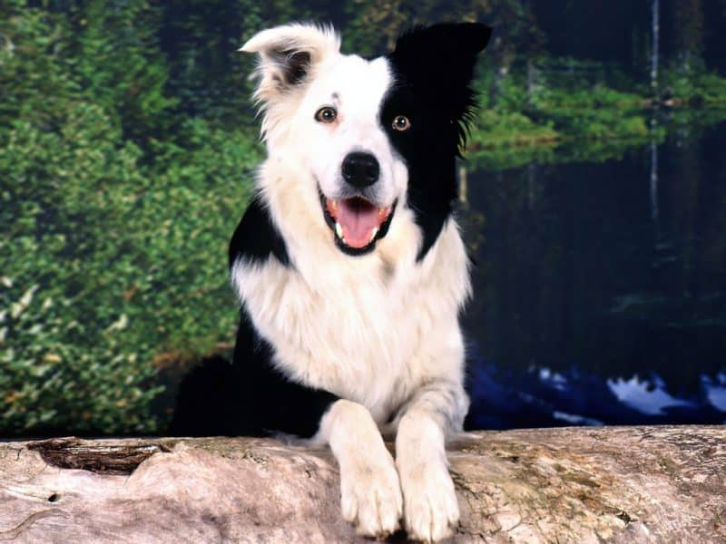
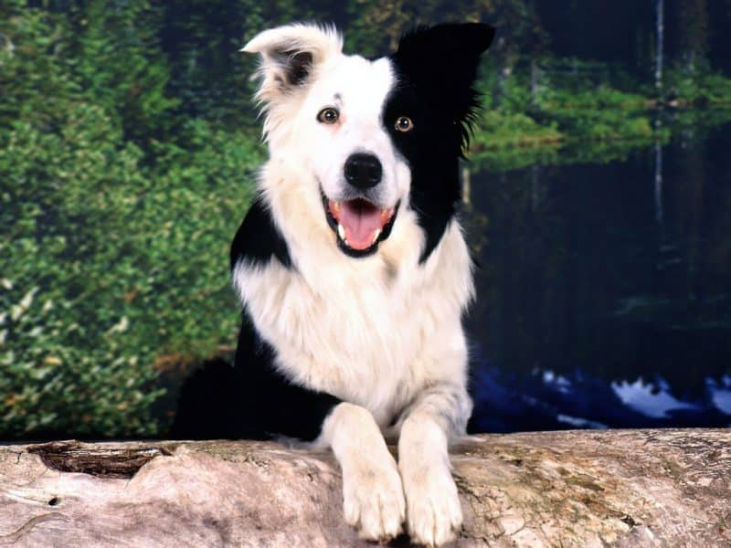
Hembra: Namur
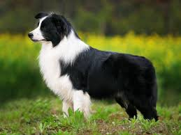
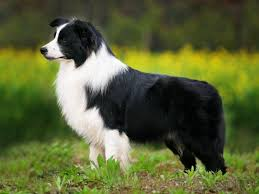
* Se esperan cachorros de Gannicus y Gaia para finales de enero.
Macho: Gannicus
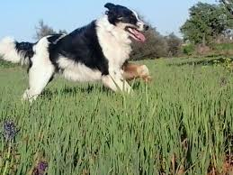
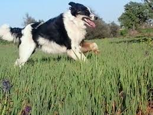
Hembra: Gaia
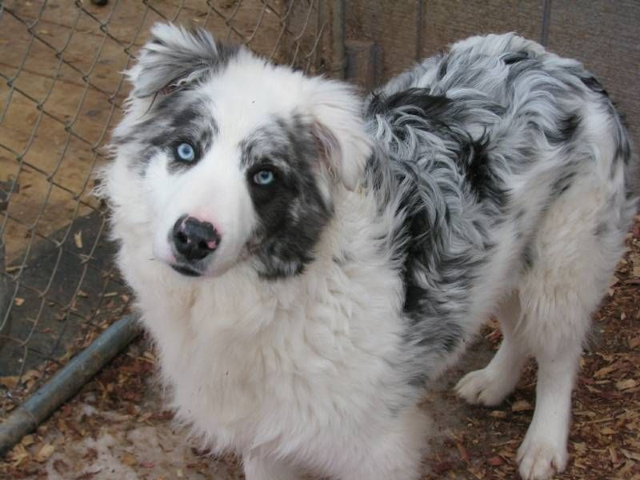
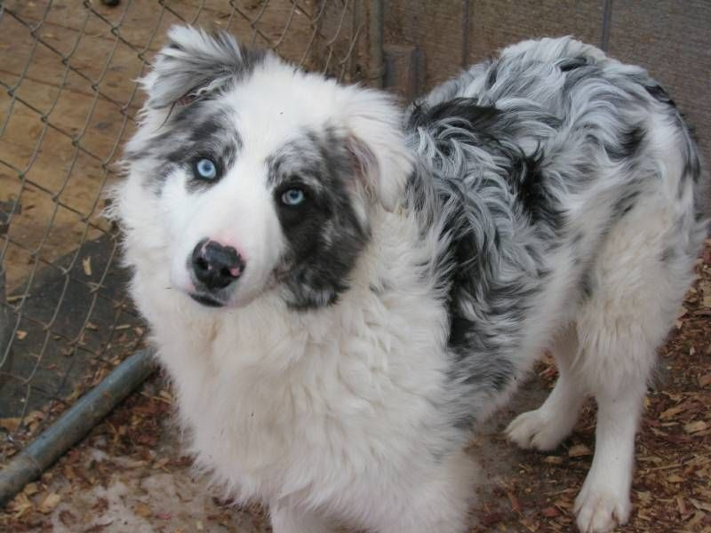
Cachorros camada anterior entre Gannicus y Gaia:
 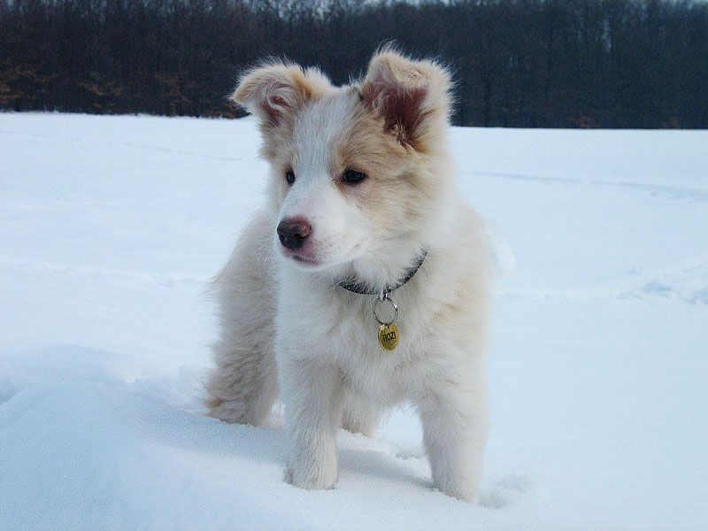
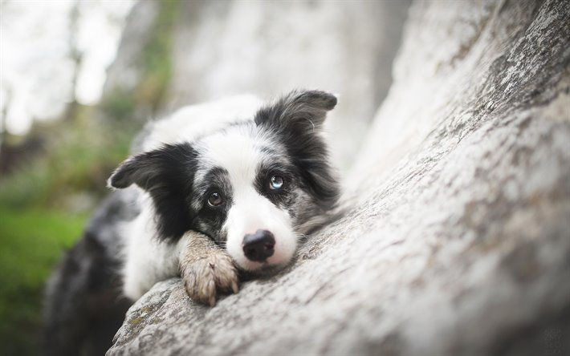
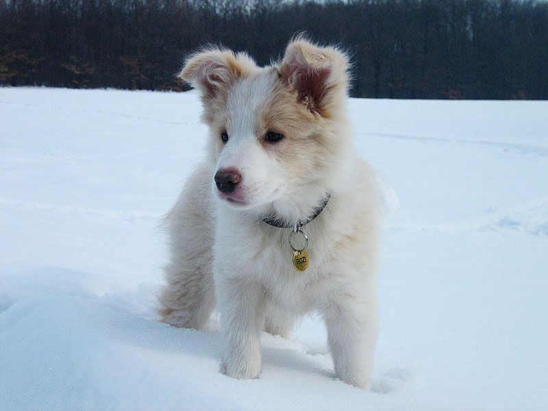
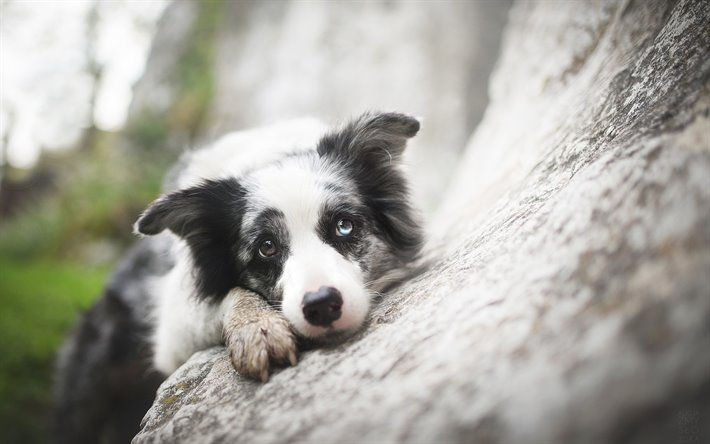
 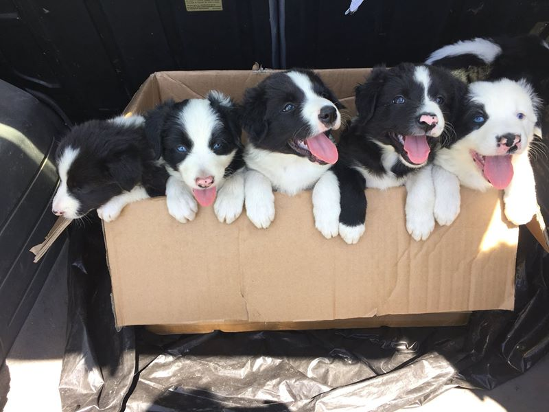
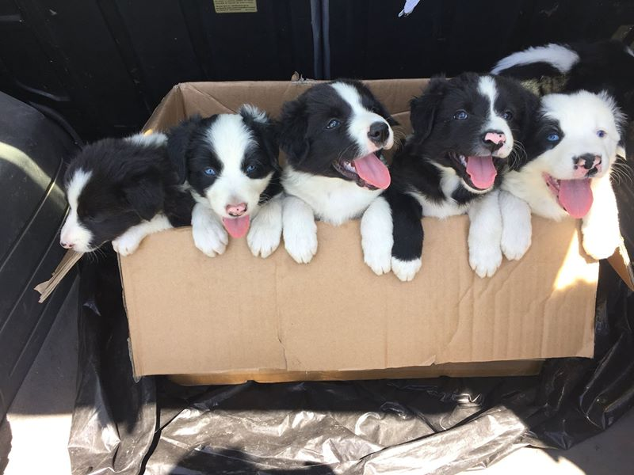
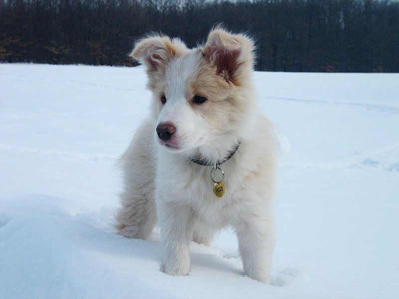
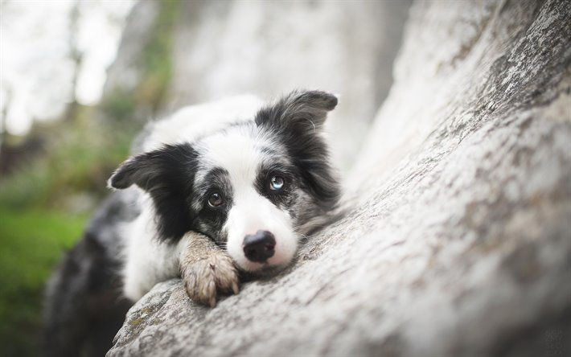
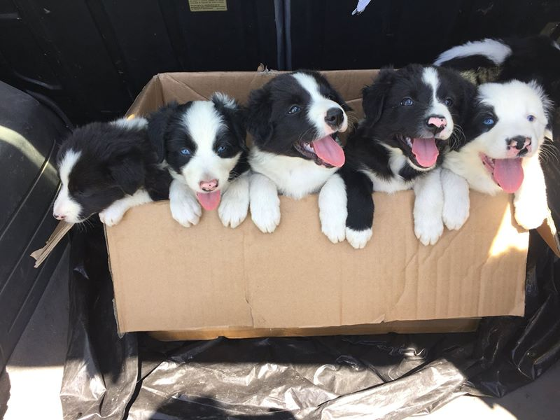